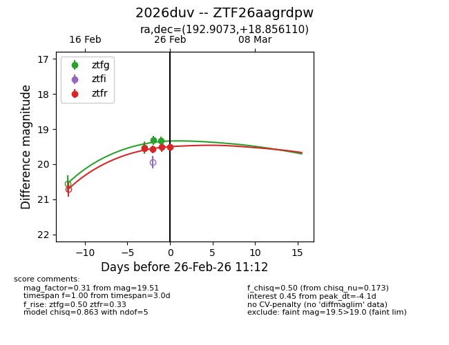
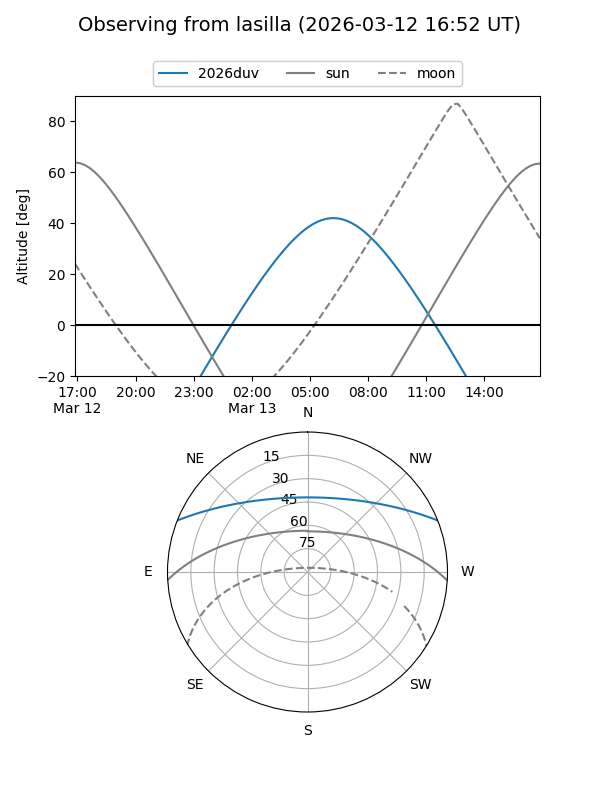
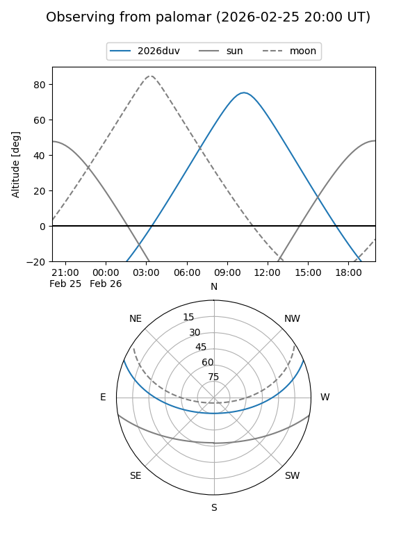
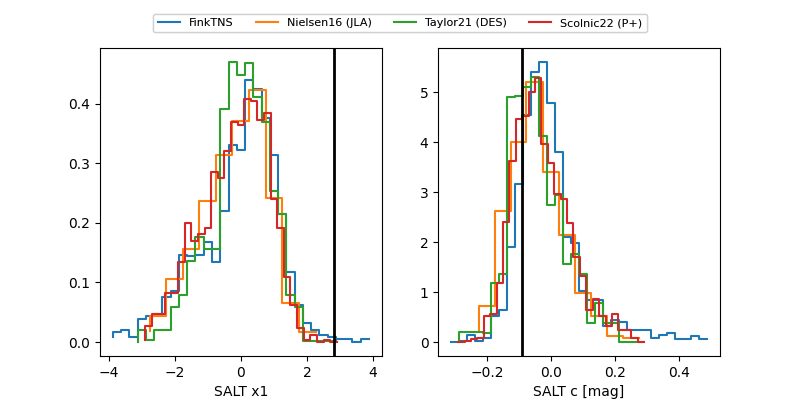

2026duv
Target 2026duv at 2026-02-26 11:13
Aliases and brokers:
FINK: link
Lasair: link
ALeRCE: link
TNS: link
YSE: link
alt names
ZTF26aagrdpw (ztf,fink_ztf)
2026duv (tns,yse)
Coordinates:
equatorial (ra, dec) = 192.9073,+18.85611
equatorial (HMS+DMS) = 12:51:37.75,+18:51:22.00
galactic (l, b) = (303.2464,+81.72774)
Flags:
Photometry:
last ztfg=19.34, ztfr=19.51
3 ztfg, 4 ztfr detections
Lightcurve

Visibility


Additional plots
